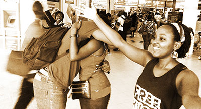
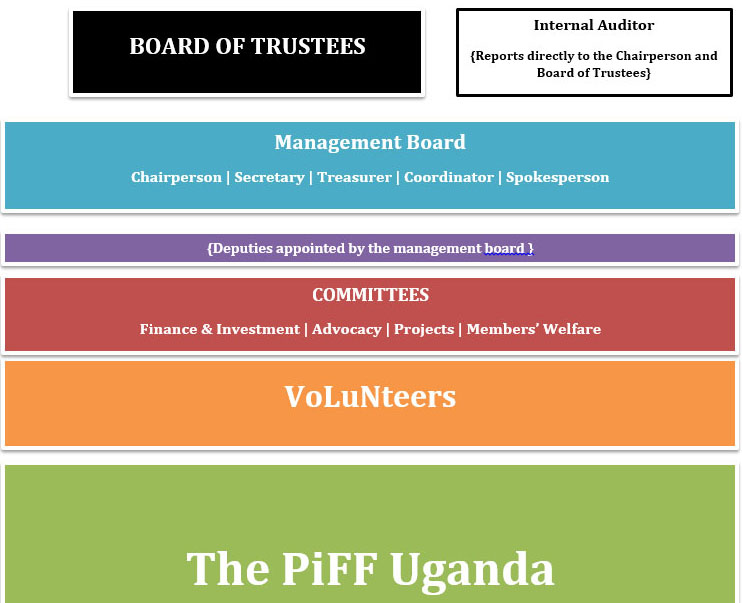

A Little Bit About Us
The Pay it Forward Foundation Uganda (PiFF Uganda) is a non-governmental organisation whose vision is to build a better world by spreading the idea of kindness.
We believe every individual has the ability to make their world better by practising kindness in their everyday lives.
'Paying it forward' is the act of increasing the goodwill in the world you live in by choosing to put into it the goodwill that you know and possess; it is the belief that what we hold to be of value counts for more when shared with the world around us.
Kindness is a generosity of spirit that nourishes both body and mind and fills one's cup of life. It is an internal culture which begins with being kind to oneself.

History
The PiFF Uganda was started in 2009 by a group of individuals who wanted to spread the idea of paying it forward.
The PiFF Uganda was registered as an NGO under the NGO registration statute in November 2010 and is governed by a constitution.
Oasis of Life Orphanage
The PiFF Uganda worked with the Oasis of Life Orphanage in Natete, Kampala in 2009 as its initial project. The primary goal of the project was to establish a sustainable model for the orphanage with the following objectives:-
- Establish a sustainable food source
- Provide access to health services for the children at the orphanage
- Provide school fees and other educational assistance to the orphanage
From its Education Fund, the PiFF Uganda provided school fees and educational materials for the children at the Oasis of Life Orphanage in Natete, Kampala in 2010 and 2011.
The orphanage was also the beneficiary funds from the Emergency Fund for food, healthcare and funds for two sustainability projects during the same period.
The Oasis of Life Orphanage project was closed down at the end of 2011 because the primary goal of building a sustainable model had not been achieved and the orphanage had developed a dependency on the PiFF Uganda.
Sister Miriam Duggan Primary School
In May of 2011, the Knowledge for All (KFA) working group established a ‘Book Club’ at Sister Miriam Duggan Primary School. Sister Miriam Duggan Primary School is located in Kamwokya II parish on the outskirts of the Central Business District of Kampala, the capital city of Uganda. The project objectives were :-
- Develop a reading culture among the pupils.
- Improve pupils’ English language reading and writing skills.
- Improve the SMDPS library
PiFF members interacted with the pupils during daily one hour reading sessions (one class per day) and taught them pronunciation, comprehension, spelling, dictionary skills, etc. The PiFF Uganda was happy to receive two interns from Uganda Christian University Mukono, Miss Sharon Mary Nansasi and Miss Sandra Kukunda, who were very active in this and other projects.
The PiFF Uganda also received a donation of various texts from the Mara Foundation of which SMDPS library was a beneficiary.
As part of its relationship with SMDPS, the PiFF Uganda took part in the school’s Sports Day celebrations which were held on 30th July 2011. The foundation provided items to be used as prizes for the various sports events the kids were involved in and also facilitated ‘Breakdance Project Uganda’, an organisation that uses hip-hop and dance as a tool for social change, which performed on the day.
Free Hugs
On the 25th of June 2011 the PiFF held a ‘Free Hugs’ drive dubbed the ‘Hugathon’. The primary objective was to build team spirit and also spread the idea of paying it forward. PiFF members, donning free hugs t-shirts and carrying placards to the same effect descended on Garden City Shopping Mall on Saturday, 25th June 2011 and gave out free hugs.
Annual General Meeting
On 19th March 2011, The PiFF Uganda had its first Annual General Meeting at Ache Havana, Centenary Park. The meeting was organised by The Kindness Drive Group. It was attended by 37 members and other well-wishers. The guest of honour was John Mark Winfield, the Deputy Mission Director USAID, and a former Peace Corps volunteer.

PiFF Structure
The PiFF Uganda is made up of subscribed members and well-wishers and is primarily run by volunteers.
You can join the PiFF Uganda in building a better world by practising kindness in your life, every day.
To become an active member of the PiFF Uganda, simply fill in a registration form and submit it. As a registered PiFF Uganda member you are entitled to stand for election to any PiFF Uganda office, vote in all PiFF meetings where a vote is called for and during the election of PiFF officials. You are also eligible to submit project proposals to the projects committee.
The daily activities of the PiFF Uganda are overseen by a management board which is made up of a chairperson, secretary, treasurer, coordinator and a spokesperson. Members of the management board are elected by the PiFF Uganda at the annual general meeting. All management board offices are deputised by volunteers appointed by the board.
To do its work effectively, the management board is assisted by various committees setup by the board whose members are voted at a PiFF Uganda members meeting and/or appointed by the board.
All PiFF activities are overseen by a 'Board of Trustees' which is made up of volunteer members picked for exemplary service to their communities, experience and standing in society.
All PiFF activities are audited by an 'internal auditor' who reports to the chairperson of the management board and the Board of Trustees.